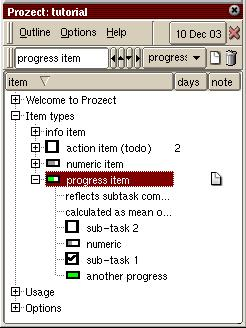

Prozect 1.1
now free as in beer
rob miller -- rob at janerob dot com
e-mail
problems
Prozect
is a hierarchical outliner and todo list application for the Sharp
Zaurus. Its features include:
- Mix item types in the same outline. I prefer to make a
heading entry, with todo items underneath it.
- Notes and due dates
- Creation date logged and accessible for each entry
- Outline stored as text file, compatible with Emacs Outline
Mode
- Undelete
- Source code under GPL
- Works with Open Zaurus 3.2,3.3 / Opie 1.0, Sharp ROM 3.10
and Sharp ROM 2.37
- QWhatsThis mode (balloon help) works under the Sharp ROMS,
grab
this if you want it to
work in your own
applications.
- Tutorial
included (this is a sample
Prozect data file)
Version 1.1 adds
- Keyboard shortcuts for everything but setting options
- Blank lines retained in data files, now works better for
sharing
outlines with Emacs
Prozect was inspired by Progect,
a Palm OS application by Laurent Burgbacher.
Prozect's source code started out as ZOutline
by Serge Stinkwich. ZOutline works only under qvfb and accesses two
compiled-in outlines.
The source code for Prozect 1.0 is available here. A free,
save-disabled demo and a US$7 full-function compiled executable (ipkg)
are available at Handango.com.
Update 14 July 2007: you may still buy the Handango.com
version, however I am selling my Zaurus and moving on to other
projects. I am therefore making the 1.1.0 version freely
available here: (ipk) (source code)
How's Business?
I include this section for anyone interested in developing
Zaurus
software to sell. The 'downloads' counter on the Handango page
includes downloads of the demo.
| month |
source downloads |
sales |
| Dec 03 |
41 |
2 |
| Jan 04 |
101 |
7 |
| Feb 04 |
36 |
3 |
| Mar 04 |
45 |
2 |
| Apr 04 |
* |
6 |
| May 04 |
19* |
1 |
* = still looking; the URL didn't hit our top 30 so isn't in the stats
pages.